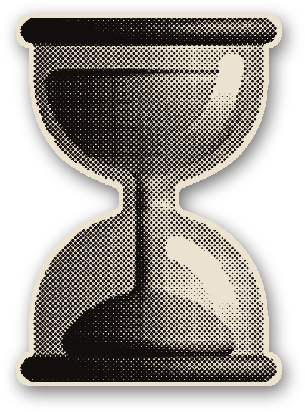

никогда не была проблемой
Что если | *лень*
Проблема | *страх* _ошибиться_
Годами

Медлить | *слабость*
Продавал тебе | *новый курс*
Планеры
Марафоны
Мотивация
2026
курсы
Ни одна тетрадь | *не начнёт* за тебя
Просто | *начни*
раньше, чем он проснётся